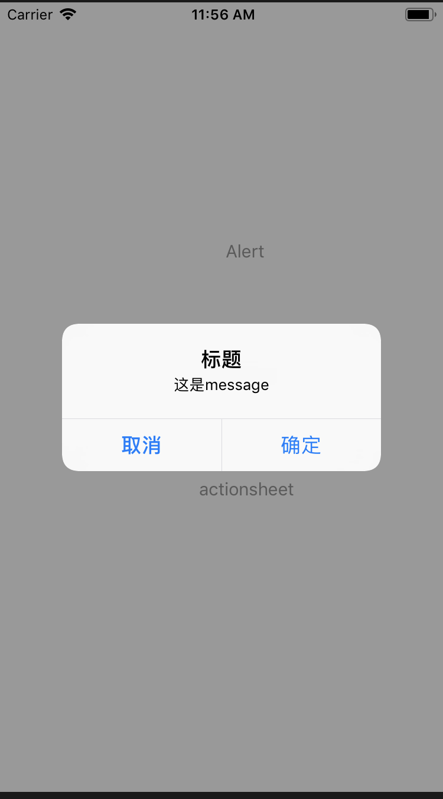
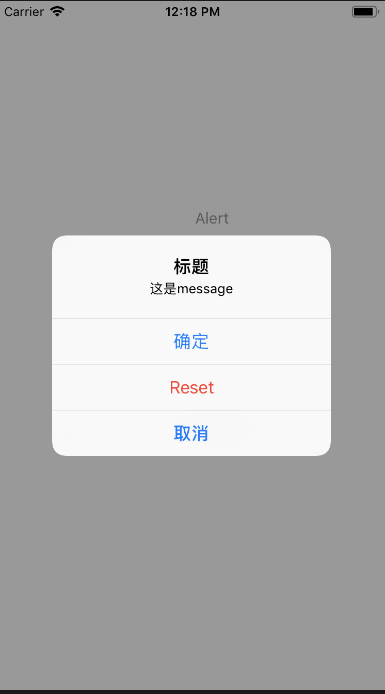
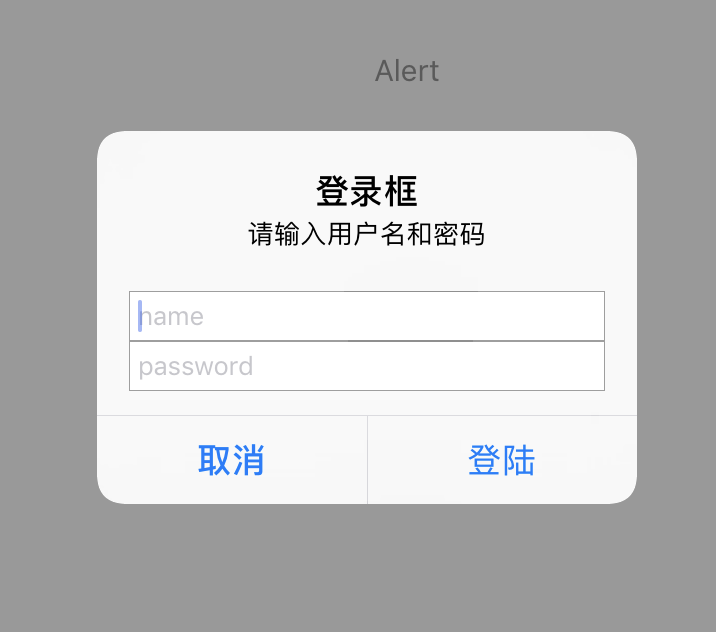
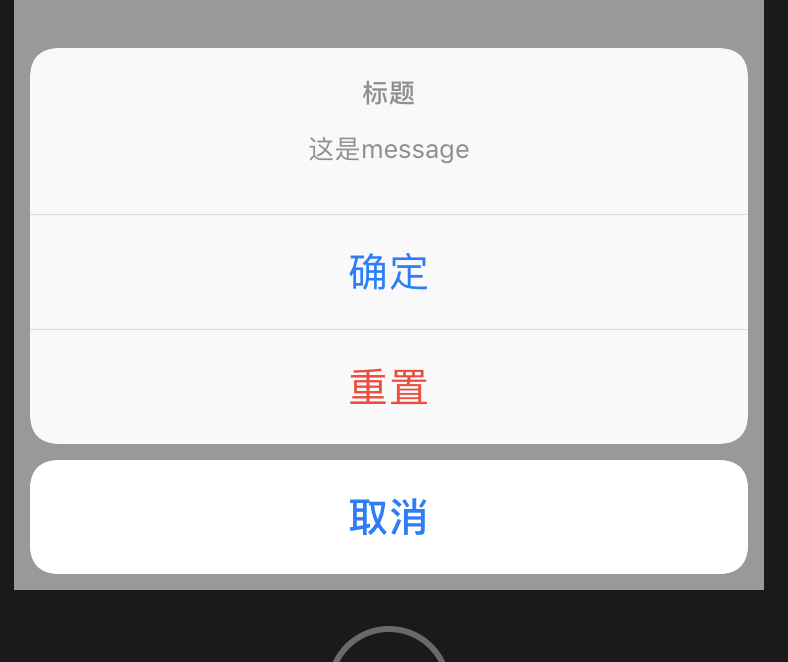
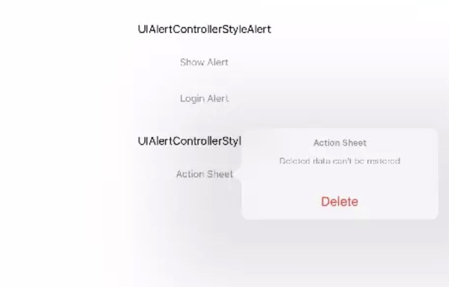

当应用需要向用户提示一些重要信息或者提示用户进行选择时，可以使用警告框(Alert)或者操作表(Action Sheet)来进行提示用户。下图中左侧是警告框，右侧是操作表。
自iOS 8开始，Apple用继承自UIViewController的UIAlertController取代了UIAlertView和UIAlertSheet。
警报控制器（UIAlertController）虽然有警告框和操作表两种形式，但其创建步骤是一样的。如下所示：
- 创建
UIAlertController，指定警报控制器样式。 - 向警报控制器添加按钮。
- 显示
UIAlertController。
“ UIAlertView is deprecated. Use UIAlertController with a preferredStyle of UIAlertControllerStyleAlert instead.”
“UIActionSheet is deprecated. Use UIAlertController with a preferredStyle of UIAlertControllerStyleActionSheet instead. “
创建警告框
创建警告控制器
创建UIAlertController很简单，不需要设置代理或者指定按钮
1 | UIAlertController *alert = [UIAlertController alertControllerWithTitle:@"标题" message:@"这是message" preferredStyle:UIAlertControllerStyleAlert]; |
1 | typedef NS_ENUM(NSInteger, UIAlertControllerStyle) { |
这里的preferredStyle:参数有UIAlertControllerStyleAlert和UIAlertControllerStyleActionSheet两种，这里我们要创建的是Alert View，所以使用第一种。
添加按钮
UIAlertAction对象由标题、样式和用户单击该按钮时运行的代码块三部分组成。UIAlertActionStyle有三种样式。
1 | typedef NS_ENUM(NSInteger, UIAlertActionStyle) { |
创建代码：
1 | UIAlertAction *sure = [UIAlertAction actionWithTitle:@"确定" style:UIAlertActionStyleDefault handler:^(UIAlertAction * _Nonnull action) { |
显示警告框
显示alert
1 | [self presentViewController:alert animated:YES completion:nil]; |
运行效果：

如果再添加一个reset按钮并设置成UIAlertActionStyleDestructive样式，再看看效果
1 | //... |

只要上面有UIAlertActionStyleCancel样式的按钮，该按钮总是在最底部，其他按钮顺序由添加顺序决定。如果包含UIAlertActionStyleDestructive样式的按钮，一般先添加，以便在第一个位置显示。每一个警报控制器只能包含一个Cancel按钮，如果你添加了两个或多个，在运行时会抛出NSInternalInconsistencyException的异常。
UIAlertActionStyleDefault 和 UIAlertActionStyleCancel 的区别
添加UIAlertActionStyleCancel样式后，在UIAlertAction只有两个时，UIAlertActionStyleCancel样式的action都会按苹果的默认风格把取消按钮放在左边；
添加UIAlertActionStyleCancel样式后，在UIAlertAction有三个及其以上的时候，UIAlertActionStyleCancel样式的action会显示在最下面。
而添加UIAlertActionStyleDefault样式时，与你addAction到alertController上的顺序有关。
UIAlertActionStyleDestructive 警示样式
警示样式的按钮会变成红色。根据苹果官方的定义，“警示”样式的按钮是用在可能会改变或删除数据的操作上，因此用了红色的醒目标识来警示用户。
创建带输入框的警告框
UIAlerController的另一个用途是我们可以向警报控制器中添加任意数量的UITextField作为警报控制器内容视图中的一部分。
比如这里用一个登录框来进行举例：
1 | //获取UIAlertController实例 |
运行效果：

创建操作表Action Sheet
操作表一般用于为用户提供一组可供选择的操作选项，如删除、恢复等。一般根据设备尺寸大小决定呈现形式，在iPhone上，操作表由底部滑出；在iPad上，操作表以弹出框（popover)形式出现。
创建操作表的方法与警告框类似，唯一不同在于preferredStyle:参数的选择。在showActionSheet:方法中创建操作表。
1 | UIAlertController *sheet = [UIAlertController alertControllerWithTitle:@"标题" message:@"这是message" preferredStyle:UIAlertControllerStyleActionSheet]; |
添加Action Sheet的按钮和添加警告框的按钮代码行为是一致的。
1 | UIAlertAction *sure = [UIAlertAction actionWithTitle:@"确定" style:UIAlertActionStyleDefault handler:^(UIAlertAction * _Nonnull action) { |
运行效果：

如果Action Sheet中有取消按钮，取消按钮每次都会在底部显示，其他按钮会按照添加的顺序显示。在Action Sheet内不能添加文本框。如果你添加了文本框，在运行时会抛出下面的异常提醒：
Terminating app due to uncaught exception ‘NSInternalInconsistencyException’, reason: ‘Text fields can only be added to an alert controller of style UIAlertControllerStyleAlert’
如上面说到的，在iPad中Action Sheet以弹出框的形式呈现。弹出框总是需要一个锚点，锚点可以是源视图，也可以是按钮。在这个demo中，我们用按钮触发弹出框，所以这里将把按钮作为锚点。showActionSheet:方法更新后如下：
1 | //inner click func |
如果在iPad中没有添加上面方法，运行时会出现下面崩溃提示：
Terminating app due to uncaught exception ‘NSGenericException’, reason: ‘Your application has presented a UIAlertController (<UIAlertController: 0x7f88c85221f0>) of style UIAlertControllerStyleActionSheet. The modalPresentationStyle of a UIAlertController with this style is UIModalPresentationPopover. You must provide location information for this popover through the alert controller’s popoverPresentationController. You must provide either a sourceView and sourceRect or a barButtonItem. If this information is not known when you present the alert controller, you may provide it in the UIPopoverPresentationControllerDelegate method -prepareForPopoverPresentation.’
现在，Action Sheet以触发它的按钮为锚点，以弹出框形式展现。

当Action Sheet以弹出框形式展现时，
UIKit会取消显示Cancel按钮。此时，点击popover以外任何区域和点击Cancel按钮效果一致，同时会调用取消按钮的完成处理程序。
退出警告控制器
警报控制器会在用户点击按钮后自动消失，但在app进入后台时，警告框和选择表并不会自动退出。此时，我们需要通过代码实现退出警报控制器。
在通知中心进行注册，当接收到app进入后台的通知时退出警报控制器。更新后的viewDidLoad如下：
1 | - (void)viewDidLoad |
记得移除观察者，否则会引起崩溃。
总结
下面总结下Alert View和Action Sheet的异同。
警告框Alert View：
- 一般显示在当前视图控制器的中心，点击警告框以外区域不能隐藏警告控制器。
- 可以添加任意数量文本框。
- 有一个或两个按钮时，横向排布，如果有Cancel按钮，则Cancel按钮显示在左侧；有两个以上按钮时，竖列排布，如果有Cancel按钮，则Cancel按钮显示在最底部。其他按钮按照添加顺序排布。
操作表Action Sheet：
- 在iPhone中自下而上滑出显示在当前控制器的底部，点击action sheet以外区域可以隐藏
UIAlertController。 - 在iPad中以popover方式、以源视图为锚点显示，点击选择表以外的区域可以隐藏警告控制器。
- 不能添加文本框。
- 按钮竖列排布，在iPhone中，Cancel按钮默认在底部显示；在iPad中，Cancel按钮默认不显示。
UIAlertController类只能原样使用，不支持子类化。该类的视图层次结构是私有的，不能修改。最后，需要注意的是，警告框和操作表向用户显示信息时会中断应用的当前流程，请只在需要的时候使用，切勿滥用。